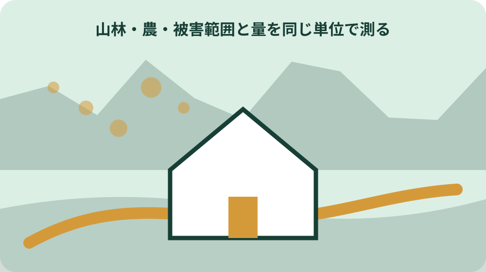
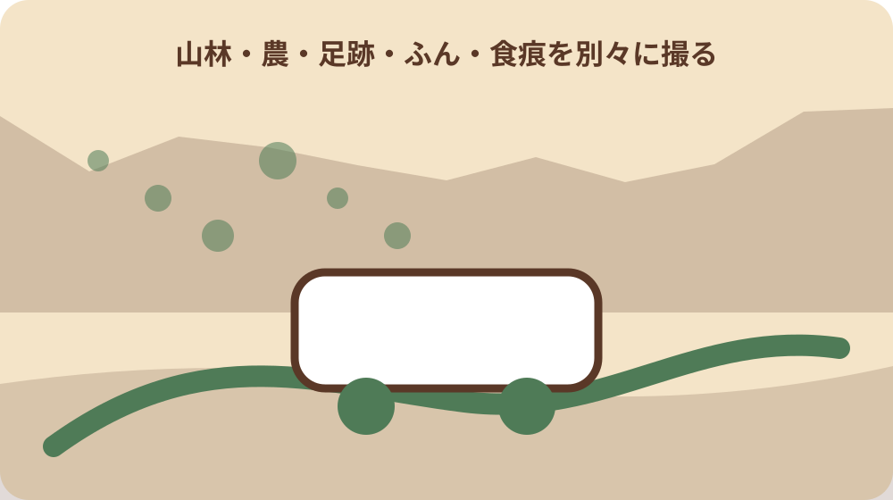

先に結論を確認する
この記事の答え：写真、足跡、ふん、食痕、目撃の有無を分けて記録し、推定と確認済み情報を混ぜずに相談します。
森町で最初に照合する条件：発見日時と撮影日時を分け、地番または地図上の位置、作物名、被害範囲、痕跡を同じ記録に結び付ける。
被害記録を相談材料に変える
森町鳥獣被害防止計画は2025年度から2027年度までの3年間を対象とし、被害の現状、軽減目標、取組方針、捕獲計画、実施体制を示します。一方、町公式ページには個別被害を写真付きで届ける統一記録様式は掲載されていません。
この記事で提案する日時、場所、作物、写真の記録は町所定の届出ではなく、相談内容を具体化するための編集上の整理です。記録しただけで捕獲や補助の申請が完了するわけではありません。相談先が求める項目や提出方法は別に確認します。
最初の一枚には発見者、発見日時、場所、被害対象、目撃の有無を書きます。分からない動物名を埋めるより、確認できた痕跡を残します。森町は有害鳥獣対策協議会や地域住民と協力する方針なので、地域で比較できる事実を整えることが相談の入口になります。
相談前に計画の公表ページと林政係の案内を開き、記録をどの方法で伝えるかを確認します。電子送信、紙の持参、電話説明のどれが受け付けられるかは記事から推測せず、個人情報を含む位置情報の共有範囲も尋ねます。捕獲の依頼、農作物被害の相談、補助申請では必要な手続きが同じとは限らないため、今回の目的を冒頭で伝えます。
発見日時と撮影日時を分ける
被害を見つけた時刻と写真を撮った時刻は同じとは限りません。朝に荒らされた畑を見つけ、夕方に家族が撮影したなら二つの時刻を分けます。被害が実際に発生した時刻は不明とし、発見時刻を発生時刻へ置き換えません。
写真のファイル名だけでは撮影日時が消える場合があるため、記録表にも日付と時刻を書きます。前回確認した日時を添えると、被害が生じ得た時間帯を「前日17時から当日6時の間」のように限定できますが、動物の活動時刻を断定する根拠にはしません。
連続して起きた被害では、毎回同じ基準で日時を残します。日付だけの記録と分単位の記録を混ぜると比較しにくくなります。相談時には発見日時、撮影日時、最後に異常がなかった日時を示し、推定した発生時間は別欄にします。
自動撮影機を使う場合は機器の時計が合っているか確認し、時刻補正をした日を記します。画像に表示された時刻を無条件に正しいとせず、電池交換や初期化で設定が変わっていないかを点検します。設置場所は私有地や通行人の撮影範囲に配慮し、画像共有時には相談に不要な人物情報を含めないようにします。
地番と地図で場所を特定する
農地や山林は住宅の住所だけで被害地点を特定できないことがあります。大字・小字・地番、地図上の印、近くの道路や水路を組み合わせます。借地なら所有者と耕作者の関係も書き、無断で他人の土地へ入らないようにします。
一筆の中に被害が点在する場合は、位置図へ番号を付けて写真と対応させます。北側の畦、茶畑の東端など方向を添え、地図の縮尺と作成日も残します。写真の背景だけから場所を推測させる形にしません。
電気柵などの補助を検討する場合、申請書には設置場所の地番、面積、柵の延長を記入し、位置図を添えます。被害記録の地点と柵設置予定範囲は同じとは限らないため、補助申請用の位置図では計画する延長を別に示します。
地点情報は緯度経度だけに頼らず、地番と現地の目印を併記します。スマートフォンの位置には誤差があるため、境界確定資料として使いません。相談用の被害地点と法的な土地境界は役割が異なります。位置図の版を更新したら古い番号を黙って振り直さず、写真台帳と対応する番号を維持して変更日を付けます。

作物名と生育段階を残す
「畑が荒らされた」だけでなく、作物名、品種が分かれば品種、播種や定植の時期、収穫前後を記します。同じ面積でも芽、果実、根、樹皮のどこが被害を受けたかで状況が違うため、食べられた部位と倒された株を分けます。
被害前の株数や収量が分からない場合は、損失額を即断しません。確認できる畝数、株数、食痕のある範囲を数え、未収穫分の金額は推計だと明記します。家庭菜園と出荷用農地も同じ集計へ混ぜないようにします。
静岡県の2024年度野生鳥獣による農作物被害額は約2億6,900万円ですが、県全体の値を森町の個別畑の損失額に割り当てることはできません。県統計は広い傾向、作物別の現地記録は相談対象の状況として役割を分けます。
複数作物が同時に被害を受けたら、茶、野菜、果樹などを別行にします。生育段階と被害部位をそろえると、同じ地点で対象が移ったかを確認できます。商品価値の判断は出荷基準など別の根拠を使います。収穫済み区画と未収穫区画を分けることで、作物がない場所を被害なしとして数える誤りも避けられます。
被害範囲と量を同じ単位で測る
被害量は毎回同じ単位で測ります。面積なら平方メートル、作物なら株数や畝の長さ、果実なら個数など、現地で再確認できる単位を選びます。「少し」「大量」という評価語だけでは前回と比べられません。
写真には物差しや既知の大きさの物を写し込み、全景と近接を分けます。ただし遠近で大きさが変わるため、写真だけから面積を算出せず、地図や実測値と対応させます。測れない範囲は概算とし、計算方法を残します。
被害の外周と、作物が失われた部分と、柵を設けたい範囲は別の線です。補助申請の面積や延長へ被害面積をそのまま転記せず、見積書と設置計画に合わせます。相談者同士で単位を統一すると再発時の変化を比較しやすくなります。
株数を数えられない広い範囲では、畝ごとの割合など測定方法を先に決めます。毎回方法を変えると増減を比較できません。概算値には概算記号と算定式を付け、公式統計の確定値と同じ欄へ置きません。
足跡・ふん・食痕を別々に撮る
足跡、ふん、食痕、掘り返し、柵の破損は一枚へまとめず、それぞれ全景と近接を撮ります。足跡なら大きさと進行方向、食痕なら被害部位、柵なら侵入箇所が分かるようにし、撮影地点を位置図と結び付けます。
痕跡を撮影前に動かしたり、比較のために手で触れたりすると状態が変わります。人やペットの足跡が混じる場所では、その可能性も記録します。危険な動物が近くにいる可能性がある場合は、撮影より安全な退避と関係先への連絡を優先します。
災害で既設電気柵が破損・流失した場合の補助では、被災証明の取得に被災状況の写真が必要と案内されています。この写真は鳥獣による作物被害を届ける共通様式ではありません。災害復旧用写真と鳥獣痕跡の記録を同じ要件として扱わないでください。
鳥獣痕跡の写真フォルダと、豪雨などによる柵破損の証明写真フォルダを分けます。前者は相談補助、後者は災害復旧時の被災証明に関わる資料です。目的、撮影対象、提出先を一覧で区別します。
動物種を推測と確認に分ける
静岡県の2024年度被害額ではイノシシが37パーセント、ニホンジカが30パーセントを占めました。しかし県全体の割合が高いことだけで、森町の一件をイノシシやシカによる被害と確定することはできません。
動物名は「目撃した」「自動撮影機に写った」「足跡から推定」「不明」に分けます。写真、足跡、ふん、食痕を別に示し、推定した理由を書きます。相談先から種類の見立てを得た場合は、確認日と回答元を追加します。
既存の熊情報は目撃地点や山への立入り時の安全確認が中心です。本記事は農地・山林の被害経過を相談材料へ整える目的で、熊の出没安全案内の代わりではありません。人身の危険がある場面では記録作業を続けず、町や警察など適切な連絡先へ相談します。
自動撮影画像に動物が写っていても、画像の鮮明さや撮影角度で判別できないことがあります。「イノシシらしい」など推定表現を残し、専門的確認を受けた後も元画像と回答日を保存します。
同じ場所の再発を時系列にする
再発を比べるには、地点番号、作物、測定単位を固定して日付順に並べます。前回の写真と同じ方向から全景を撮ると、侵入地点や被害範囲の変化を確認しやすくなります。別の畑の記録を一つの連続被害へまとめません。
雨、収穫、草刈りなどで痕跡が消えた場合は「被害なし」とせず、「痕跡確認不能」と書きます。防除を行った日も時系列へ入れ、実施前後で確認間隔が変わったなら注記します。記録が途切れた期間を推測で補完しません。
同じ項目を続ける目的は、動物名を断定することではなく、発生時期、地点、作物、防除後の変化を比較することです。町所定の届出様式ではないため、相談時にこの表をそのまま提出できるか、必要な追加情報があるかを林政係へ確認します。
月別一覧では被害件数と見回り回数を併記します。見回りが増えれば発見件数も増える可能性があるため、件数だけで被害急増と決めません。空白日は被害なしなのか未確認なのかを記号で区別します。
実施した防除と結果を記録する
防獣ネットを張った、侵入口を塞いだ、収穫残さを片付けたなど、実施日、場所、方法を被害記録へ加えます。「対策済み」だけでなく資材の種類、範囲、点検日を残し、次の被害が対策区域内か外かを区別します。
結果は一度被害がなかっただけで成功と決めません。確認した日数、同じ作物の状態、別地点への移動を見ます。新しい痕跡がなければ「確認期間中は新規痕跡なし」と書き、将来の侵入がないと保証する表現を避けます。
柵の設置を補助申請と結び付ける場合は、購入前の相談が必要です。先に資材を買ってから結果記録を始めても、購入済み資材は申請できません。被害記録、設置計画、見積り、申請時期を別々に管理します。
防除後の点検では、柵の通電、隙間、倒木、草の接触など方法に応じた項目を決めます。専門的な安全手順は製品説明と担当者の案内に従い、記事の記録例を設置・修理手順として使いません。

森町の計画と相談窓口を確認する
森町鳥獣被害防止計画は、鳥獣による農林水産業等の被害防止に関する法律に基づいて作成されています。計画期間、被害の現状、目標、捕獲、実施体制を確認する一次資料ですが、個別被害の動物判定書ではありません。
相談時には、地番または位置図、作物名、発見日時、被害範囲、痕跡写真、実施済みの防除を一枚にまとめます。これは相談を具体化する編集上の提案です。町が指定する受付方法や現地確認の要否があれば、その案内を優先します。
森町は有害鳥獣対策協議会、地域住民と協力して地域全体で被害防止に取り組むとしています。近隣の被害を聞いた場合も伝聞と自分が確認した事実を分けます。個人名や私有地の詳細は共有先を限定します。
相談時は計画期間が2025年度から2027年度であることを確認し、現在の担当や案内が更新されていないかを見ます。計画PDFの一般目標と、窓口が個別事案に求める情報を別々に記録します。
柵の購入前に補助条件を読む
補助対象者は森町内に農地または山林を有する人で、借地も含まれます。対象資材には電気柵、ワイヤーメッシュ柵、防獣ネットなどがあり、補助額は対象経費の3分の2、上限60,000円です。個別の対象可否は購入前に確認します。
申請には申請書、見積書、設置場所が分かる位置図が必要で、申請書には地番、面積、柵の延長を記入します。同一申請者は同一年度に複数回申請できません。必要な延長を分割して後から再申請する前提を置かないようにします。
購入済み資材は申請できません。前年度以前の申請者でも設置場所が異なれば申請できる案内がありますが、同じ場所か別の場所かを地番で確かめます。災害復旧は耐用年数前でも対象になる場合があるため、被災証明と写真の要件を通常申請と分けて尋ねます。
上限60,000円は支払額を保証する数字ではありません。対象経費の3分の2との低い方になるため、見積りのどの資材が対象かを確認します。工賃や付属品を自己判断で対象経費へ含めません。
大石の視点：被害記録から土地の選択肢を守る
所有者と耕作者が異なる場合は、誰が発見し、誰が写真を撮り、誰が町へ相談するかを決めます。原本写真は撮影者と撮影日時が分かる場所に残し、共有表には地点番号を使います。加工した画像だけを根拠にしません。
私は小さな不動産業者として、被害が出た直後に土地の処分を結論にするより、被害地点、境界、進入路、耕作関係、防除費を順に整理する方が家族の選択肢を守れると考えます。これは私見であり、森町の計画や補助条件ではありません。
共有の最終行には、次の見回り日、林政係へ尋ねる事項、購入前に確認する資材を記します。記録は町所定様式ではないと明記し、公式の申請書が必要な手続きには転用しません。熊など人身の危険がある出没情報は、農作物被害の台帳だけで済ませず安全案内に従います。
公的事実は計画期間、補助率、上限、必要書類として出典付きで示します。私見は土地を急いで処分しない確認順に限定し、被害原因や制度利用可否を断定しません。家族にはこの境界を明示して共有します。被害が続く場合は、見回り記録、柵の点検、相談回答を同じ時系列へ置きますが、町の計画にある県全体の傾向を個別原因の証明には使いません。土地の維持、耕作継続、第三者への管理依頼を比べるときも、補助上限60,000円だけで総費用を決めず、資材費、設置後の点検、草管理、再発時の対応を別々に見積もります。安全上の出没連絡が必要な場面では、家族会議や費用比較より先に公的な案内へ従います。